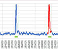

search_16s command (64-bit only)

See also
SEARCH_16S algorithm
SEARCH_16S paper
The search_16s command searches a long sequence such as a chromosome or contig for 16S genes.
It has exceptionally high accuracy, finding at least 99.9% of known 16S genes with few or no false positives.
A bit vector database is required, specified by the -bitvec option. See
creating a bit vector file for the search_16s command
.
Input can be in FASTQ or FASTA format.
-hitsout option
FASTA file containing "hits", i.e. regions with elevated density of signature words. These are candidate 16S genes with flanking sequence (see paper for details).
-fastaout option
FASTA file containing predicted 16S genes.
-fragout option
FASTA file containg probable fragments of 16S genes which lack one or both identifying motifs.
-tabbedout option
Tabbed text file containg records for query sequences, hits, full-length genes and fragments.
-start_motif option
Start motif. Default GNTTGATCNTGNC.
-end_motif option
End motif. Default AGTCNNAACAAGGTANCNNTA.
-min_gene_length option
Minimum gene length. Default 1200.
-max_gene_length option
Maximum gene length. Default 2000.
-maxstartdiffs option
Maximum number of mismatches with the start motif. Default 4.
-maxenddiffs option
Maximum number of mismatches with the end motif. Default 4.
Example
usearch -search_16s contigs.fa -bitvec gg97.bitvec -fastaout 16s.fa -tabbedout results.txt